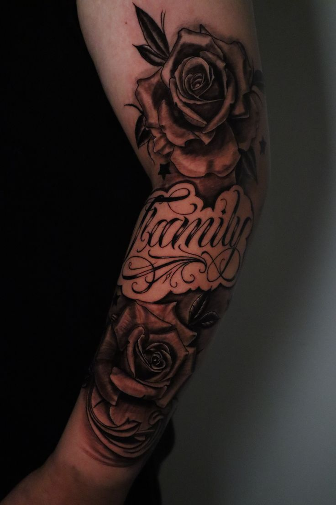

Cura
& FAQ
Metà del risultato dipende dalle tre settimane successive.
Le prime tre settimane
- Ore 0 – 4Tieni la pellicola protettiva, non toccare
- Giorno 1Acqua tiepida e sapone neutro, tampona e lascia asciugare
- Giorni 2 – 7Crema in velo sottile 2–3 volte al giorno. Niente sport né acqua
- Giorni 7 – 15Crosticine e prurito: non grattare, cadono da sole
- Giorni 15 – 30Pelle opaca: normale. Continua a idratare
- Per sempreSolare 50+. Il sole è l'unica cosa che lo rovina davvero
Sì
- Mani pulite ogni volta che tocchi
- Vestiti larghi e lenzuola pulite
- Doccia breve, mai bagno prolungato
- Scrivimi una foto se qualcosa non ti convince
No
- Grattare o staccare le crosticine
- Mare, piscina e sauna per tre settimane
- Sole diretto e lampade fino a guarigione
- Vaselina, pomate a caso, alcol e sport pesante

Come arrivare
alla seduta
- Dormi e mangia, il corpo regge meglio
- Niente alcol la sera prima
- Porta il documento, senza non si tatua
- Vestiti comodi che lascino scoperta la zona
- Segnalami farmaci o allergie
- Acqua, snack e cuffie: le sedute sono lunghe
Quello che mi chiedete sempre
Fa male?
Dipende dalla zona. Braccio, polpaccio e coscia sono tollerabili; costole, mani e piedi bruciano di più. Le pause si fanno sempre.
Il disegno si paga?
No, è compreso nel prezzo del tatuaggio. Se poi rinunci, l'acconto copre il lavoro fatto.
Posso portare la foto di un tatuaggio già fatto?
Come riferimento sì, come copia no: da lì costruiamo qualcosa di tuo.
Si può coprire un vecchio tatuaggio?
Quasi sempre, ma va visto dal vivo. A volte servono prima due o tre sedute di laser.
Quanto dura una seduta?
Di solito 2–4 ore, fino a una giornata intera per i progetti grandi. Oltre le 7 ore la pelle non risponde più.
Il ritocco è compreso?
Sì, il primo entro sei mesi, salvo tatuaggi esposti al sole o maltrattati in guarigione.
Tatuate i minorenni?
No, solo dai 18 anni compiuti con documento, senza eccezioni.
Posso venire accompagnato?
Una persona sì. Lo spazio è piccolo, quindi evitiamo i gruppi.
Dubbi ancora?